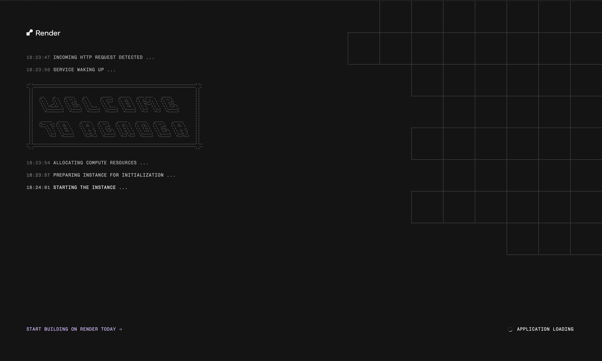
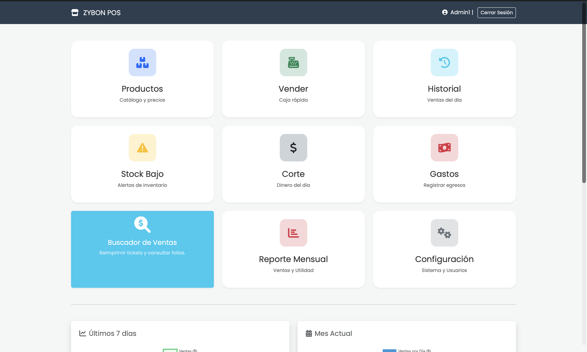
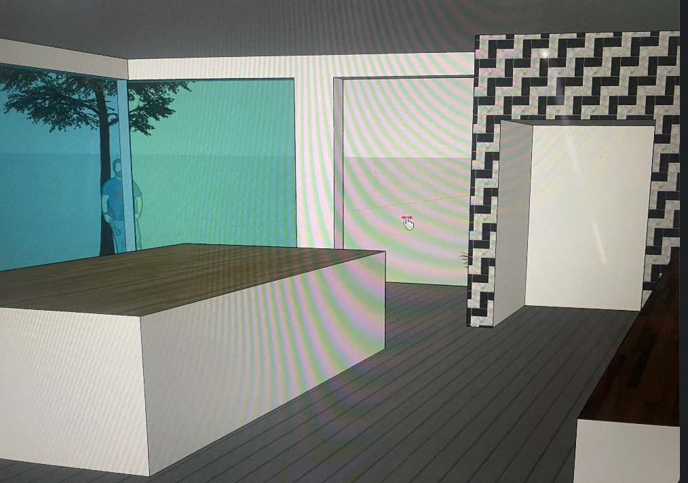

Carlos Nava
Ingeniero en Desarrollo de Software especializado en full-stack, automatización y arquitecturas de datos. Me apasiona entender las necesidades reales de cada proyecto para diseñar sistemas intuitivos, bien estructurados y listos para resolver problemas complejos de forma simple. Respaldado por experiencia en entornos empresariales de gran escala y múltiples reconocimientos estatales y regional en innovación tecnológica, transformo ideas en aplicaciones y herramientas robustas que realmente funcionan, disponible para proyectos remotos y presenciales.
Plataforma TAOIP (Grupo Xcaret)
Plataforma Big Data Empresarial e Inteligencia de Activos TI

Desglose Arquitectónico
Plataforma enterprise desarrollada para optimizar la trazabilidad y la continuidad de servicios críticos en el Hotel Xcaret México.
Sismógrafo & Matriz IoT
1er Lugar en Innovación Matemático-Tecnológica

Desglose Arquitectónico
Sistema embebido capaz de procesar señales de ondas físicas mediante modelado matemático riguroso y software propio.
Motor POS & Automatización
Automatización transaccional y de inventarios full-stack

Desglose Arquitectónico
Aplicaciones comerciales orientadas a eficiencia operativa, reduciendo mermas de inventario y optimizando flujos de caja.
Cinta Transportadora Automatizada
Clasificación inteligente con sensores — 1er Lugar interno

Desglose Arquitectónico
Celda de manufactura automatizada que utiliza lógica secuencial y lectura por sensores múltiples para clasificación de piezas.
Habilidades Técnicas
Dominio en lenguajes como Python, C#, Java, JavaScript, HTML, CSS y SQL. Experiencia en infraestructura SQL, Git, Docker, Kubernetes, bases de datos relacionales y control de hardware IoT .
Perfil
Ingeniero en Software apasionado por la tecnología y creatividad, con experiencia y premios en competencias de robótica. Pensamiento analítico y enfoque en inteligencia artificial aplicada.
Herramientas Digitales & IA
Edicion, Canva y Figma para interfaces y contenido visual. Uso estratégico de herramientas de inteligencia artificial para programación y optimización de flujos de trabajo.
Habilidades
Autoliderazgo y gestión del tiempo · Comunicación técnica estructurada · Resolución analítica de problemas · Trabajo en equipo y aprendizaje continuo.
Desarrollo de TAOIP desde cero, plataforma empresarial para centralizar gestión de activos tecnológicos, trazabilidad y optimización de procesos de TI.
Desarrollo de sistemas de punto de venta (POS) y aplicaciones web personalizadas con Python, SQL, HTML y CSS para automatización de negocios.
Gestión de finanzas corporativas e inventarios mediante modelos en Excel. Diseño e implementación de la plataforma web oficial de la empresa.
Impartición de planes de estudio técnicos en programación, electrónica y automatización, guiando a estudiantes en prototipos prácticos.
Planeación y ejecución de actividades recreativas y educativas, supervisión de grupos infantiles fomentando trabajo en equipo.
Ingeniería en Desarrollo de Software
Formación enfocada en desarrollo full-stack, automatización y arquitecturas de datos de alto impacto empresarial.
Cursos Complementarios
- UNAM — Robótica AvanzadaUNAM
- AWS AcademyAWS
- Bases de Datos & Excel AvanzadoSQL
- IA y UI/UX (Figma)UI
Certificaciones
- Robótica Avanzada y Automatización (UNAM)UNAM
- Arduino + Processing (UNAM)UNAM
- PH4 Bionics — Prótesis 3DPH4
- Python IntermedioPY
- Bases de Datos SQLSQL
- Excel AvanzadoXLS
- Figma UI/UXFIG
- Inteligencia Artificial AvanzadaIA